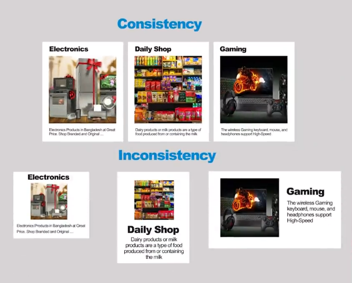
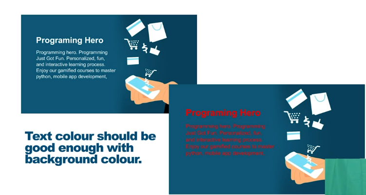
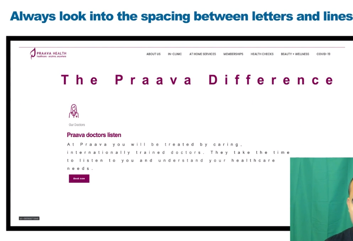
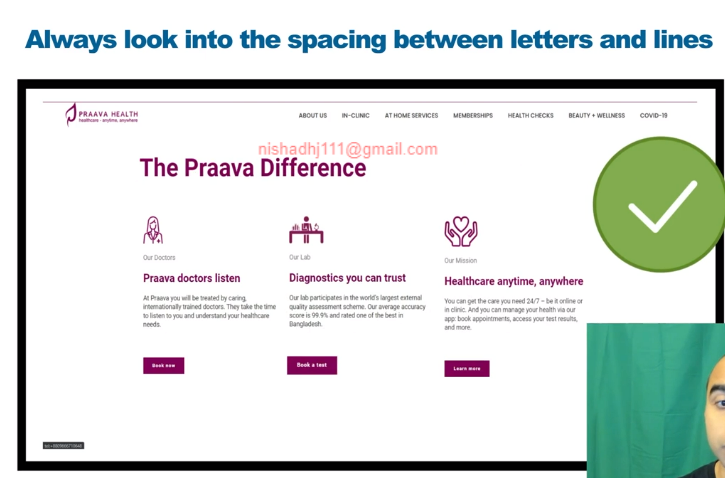

একজন ডিজাইনার হতে হলে এই 6 টা জিনিস করতে হবে ।
নাম্বার ১ঃ- ওয়েব-সাইটের Purpose কি সেটা বুজতে হবে তারপর Purpose এর উপর ভিত্তি করে ওয়েব-সাইট কে simplification করা ।
২ঃ- একটা ওয়েব-সাইটের Consistency Maintain করা অনেক গুরুত্ব পূর্ণ ।
৩ঃ- যেকোনো ওয়েব-সাইটের একটা মেইন color থাকে । এই color এর উপর লেখা গুলো জেন সহজে পরতে পারা যায় এই জিনিসটা খুব Important .
color এর অনেক গুলা ধরন আছে , যেমন primery secondary color (কোন color এর সাথে কোন color টা যাবে । )
Audience এর উপর নিরভর করে color নির্ধারণ করতে হয় ।
যেমন ঃ- young হলে এক রকম ।
Kids হলে এক রকম ।
female হলে এক রকম color ।
৫ঃ- সব সময় Resource করতে হবে যে টাইপের ওয়েব-সাইট বানাবো সেটা নিয়ে ।
background এর সাথে Text এর color এর একটা perfact Combination থাকতে হবে
যেমন

Perfect গ্যাপ থাক জরুরী
 